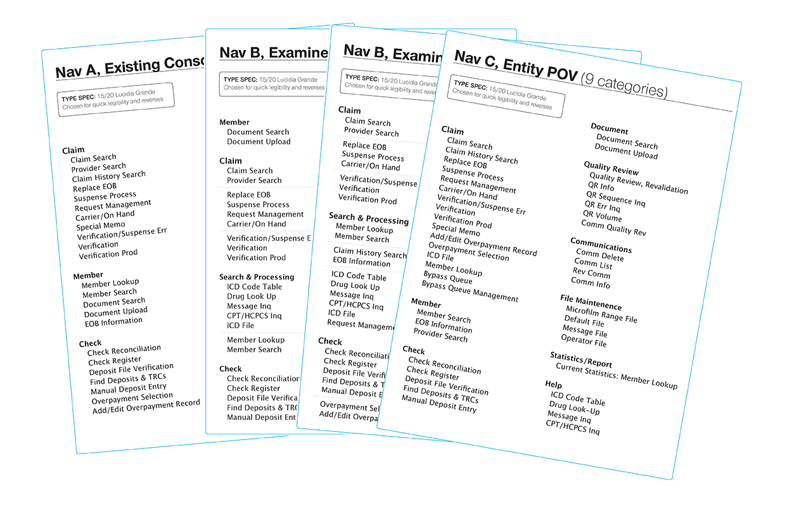
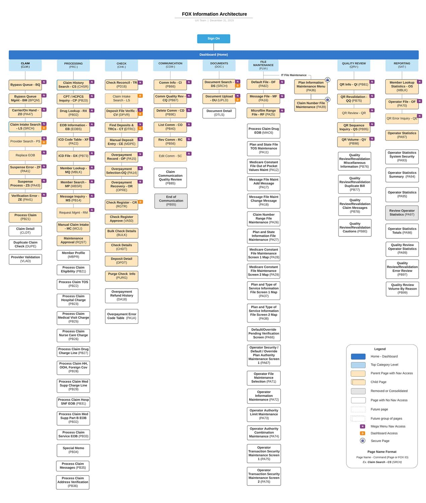
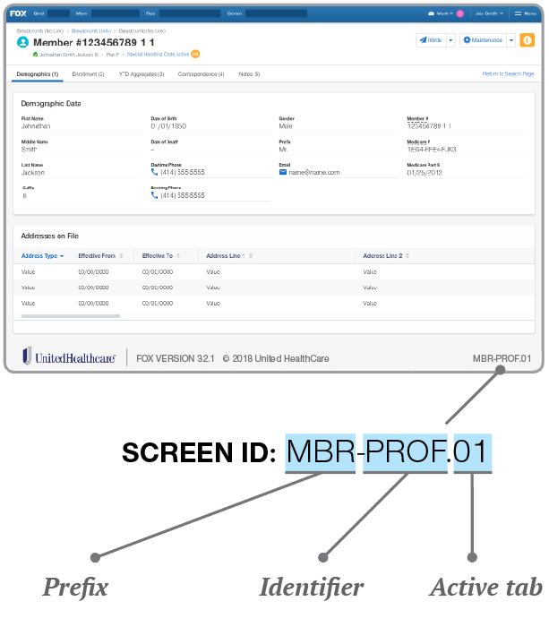
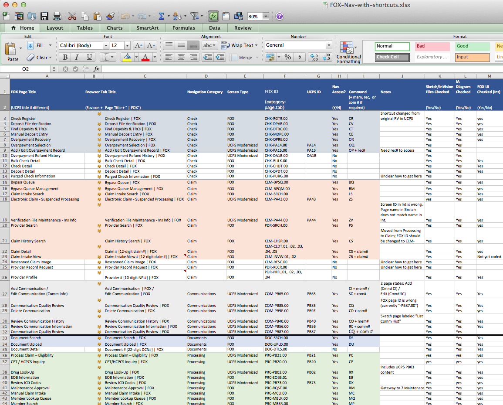
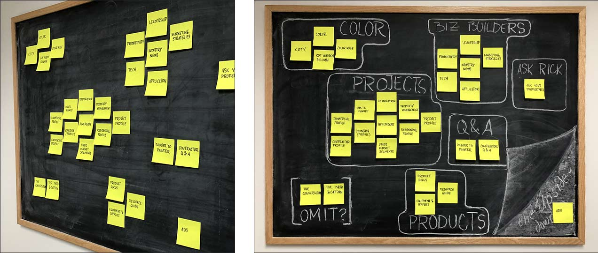
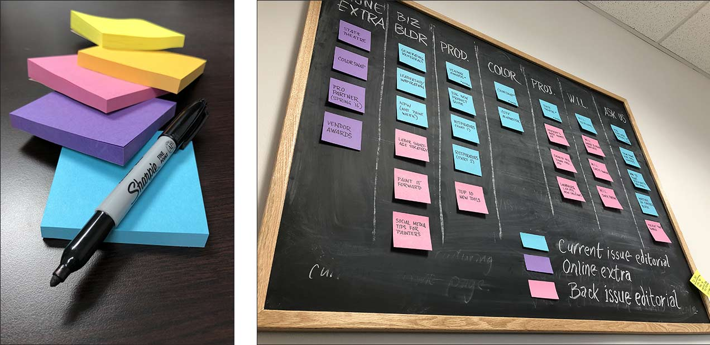
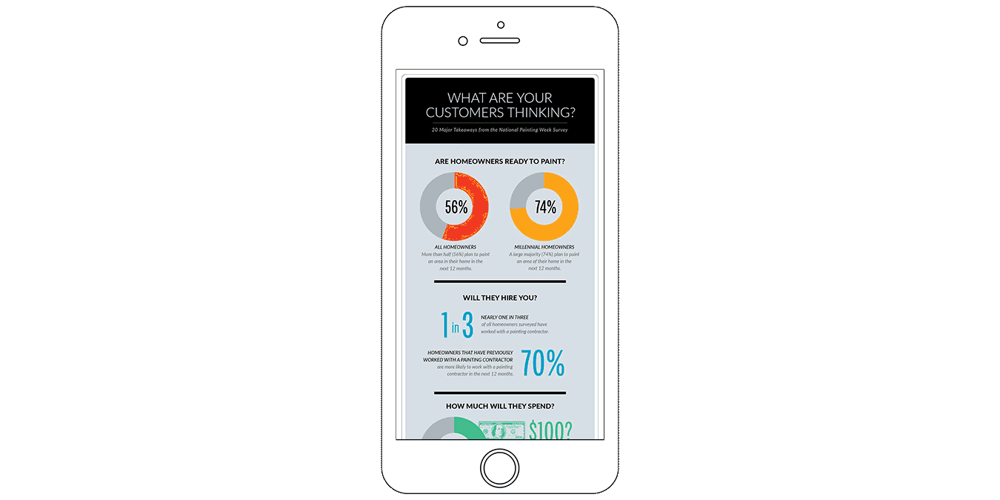
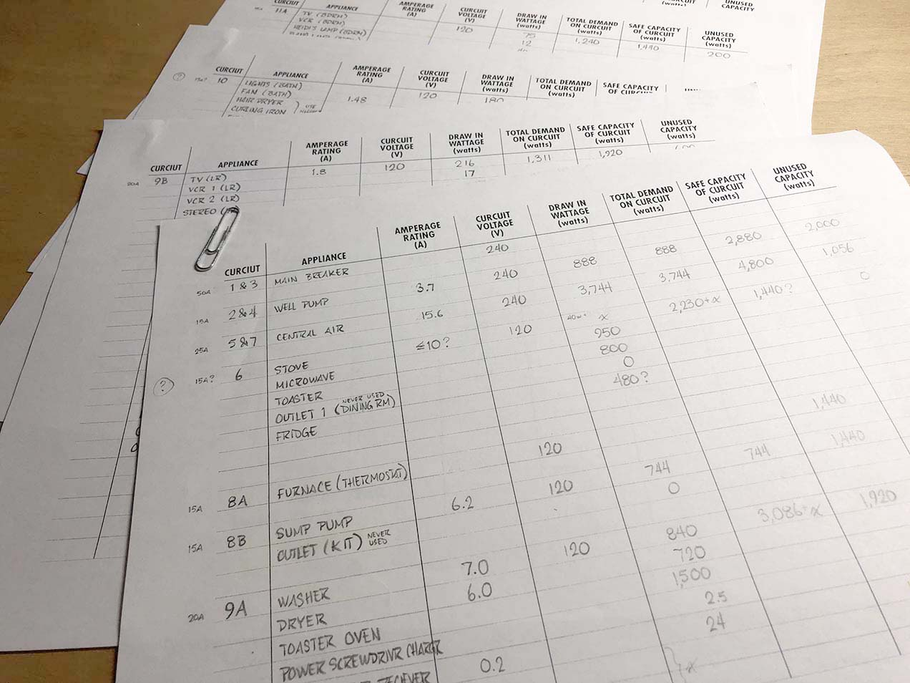
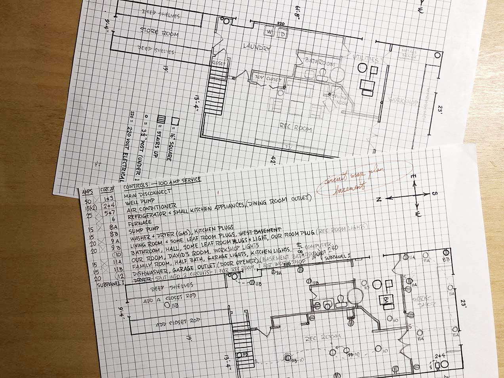
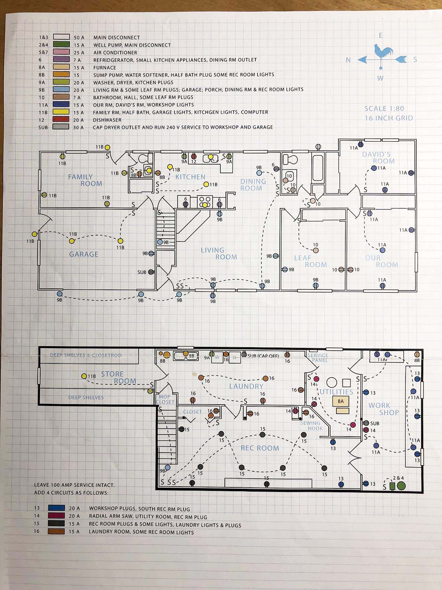

IA, usability testing
IA, research
IA, research
IA, usability testing
When work started on the navigational architecture for our claims system, organization was based on two influences: 1) the old claim system, and 2) the structure the team imposed on the screens we were designing. A third influence – a card sort that I conducted with users – upended several organizational assumptions we'd begun the project with.
The results of the card sort surprised the design team. Things we thought of as top level categories (eg. Document, Provider), users saw as being merely attributes of a claim, and not categories at all.
The hierarchy discovered during the card sort was included in a more widely distributed poll to users. It largely supplanted the structure that the design team had imagined.
Eventually the nav that made the most sense to users was turned into a site map. Here top level nav categories are shown in pale blue, and pages accessible from the mega menu nav can be identified by the purple tags. It’s worth noting that the vast majority of navigation in FOX is done through either a command field interface or page level navigational links. The mega menu itself chiefly serves new users and users new to a role (e.g. users moving from Claims to the CPU or Checks Teams, for example).
As we continued to work with the old claim system, one feature – screen IDs - proved incredibly useful. Each screen in the old system had a unique 4-character identifying code on the footer, which allowed the project team to refer to screens with clarity even when screen titles were long, confusing, or similar (eg. “Process Claim - Medicare Supplement Screen A”, “Process Claim - Medicare Supplement Screen B”). With the old screen ID system having proved its utility, I advocated for a new screen indexing system for the new claims processing application. Such a system would need to accommodate existing screens which were being modernized (but remained functionally the same) and new custom screens, which were consolidations of existing screens or entirely new functionality.
I was convinced that the new system should have some shorthand meaning to even first time user – a feature the old system lacked. I also wanted to include the IA, so it was clear where the screen existed within the app’s navigational structure. Eventually my list of qualities expanded to include the following:
So how useful is the new indexing system? The real test will come when the next big research or design phase is reached. Hopefully future researchers will be as happy with it as I was to find the old screen index.
Having come to UX from a visual background, I didn’t have a built-in appreciation for spreadsheets. My exposure to them had been limited. My work with the claims system nav brought me to appreciate and even love Excel. I eventually found the most useful expression of the site map was the spreadsheet inventory.
It was easy to add dimensions to the spreadsheet as our needs evolved. For example, over time I added columns to track visual design status, page title and favicon, open questions and tags for high-use screens and usability issues.
IA, research
In 2016 I successfully launched a website for Professional Painting Contractor (PPC) magazine. Engagement soared over the previous digital flipbook offering, with over 700% more unique visitors, 1,000% more page views, and 1,700% more clicks in its first year. PPC is still produced in print as well, with a circulation of nearly 300,000.
PPC was my first magazine site. There were several new problems to solve. I drew up wireframes to define how content would be organized and focus attention on the navigational needs of users. Collaboration with the product team resulted in additional content such as a video sidebar, diversified offerings to advertisers and long form digital-only content.
In the transition to web, the magazine’s 26 print departments were consolidated under 7 menu headings to create a user-friendly nav bar. Departments were organized first into related content clouds (left), then each cloud was named for the site’s main content menu (right).
An early site wireframe, showing rough screen space hierarchy and navigational handles. Later in the site’s evolution, we added content categories and advertising accommodations.
One of the benefits of working in a small division is the opportunity to learn a lot, quickly, across mediums. This generates opportunities to pilot projects outside your comfort zone. In this case, the need was to prototype and create the site without a developer. So… WordPress. Several robust magazine templates were available, and established publication sites provided both inspiration and a few warning signs.
The site was initially populated with regular spring issue editorial, and fleshed out with selected back issue content wherever categories were thin. In the transition to web, the number of named departments was consolidated to create a user-friendly nav bar.
From the beginning of the project, WordPress was well suited to our needs. PPC had been in continuous publication for 26 years, and I had a mountain of high-quality content in hand. The CMS allowed me to quickly upload actual text and photos securely. I created my first working prototype of the PPC site in about two days. The results were impressive enough to unite the rest of the product team behind the project, win approval from the client, and launch the site as a pilot program.

The serial nature of magazines made iterative improvements to the site natural. Since launch, we’ve added more outbound links to SW product specs and increased cross-references within the magazine site to shortcut readers to related content. Another improvement has been the introduction of entirely new types of web-only long-form content that simply wasn’t possible in print.
In print, the National Painting Week survey ran as 400 words of editorial on a single page with a spot illustration. Without page constraints, the web version blossomed into a scrolling infographic, with most of the copy expressed in graphs.
IA, research
This circuit map is an information architecture problem that's an unfiltered expression of my personal design philosophy. It's an entirely personal project that ties IA to data visualization.
20 years ago, I was house shopping. I found an unremarkable 3-bedroom ranch with an unfinished basement. This story really starts with that basement. There was nothing built on the lower level at all; it was a completely blank canvas. I’m a builder, so this was a selling point. We bought the house. Shortly after we moved in, I began mapping the home electrical system, knowing that I’d someday want to finish the basement and add circuits.
I started by making a table of the existing circuits in the service box and calculating the capacity and total load on each. A few were underutilized and were capable of powering lighting for future living space. Others were unused entirely as appliances moved from electric to gas, and I rerouted these to the workshop and garage.
Circuit Load Worksheets - These are essentially blank tables that the user fills in to compare total demand on each circuit to safe capacity (in watts). The results show which circuits have unused capacity and which are at risk of overload.
Draft Usage and Ciruits - The first map (above) showed how I intended to use the space. The second (below) was an early draft of lighting, switch and outlet layout that met the needs of our intended usage.
Later I sketched my floor plans and learned the basics of the electrical symbol library to map outlets, lighting and switches, first by hand, then in Illustrator (remember, this was 20 years ago). I iterated on paper copies of the maps to plan our intended use of the lower level space. Once we were happy with the plan, I laid out new lighting and power to support my needs within the space, and made sure the plan met code.
I finished the map off by labeling everything clearly and color coding the circuits. It’s been incredibly helpful through the years as I wired and built a basement workshop, laundry, storeroom and rec room.
I love this map. It’s understandable even if you’ve never seen a circuit map before. It was useful over the long term. It follows principles of clear labeling and using color to add meaning. It ties my love of visual understanding to a problem that pre-dates my knowledge of user experience. Looking back, the process feels very familiar – define, research, sketch, iterate, test, deploy. It’s a process I’ve been using for a very long time.
Finished Circuit Map - The final circuit map ended up being incredibly useful for years. I taped a copy to the inside door of my breaker box, and kept another in my electrical toolbox. Unfortunately, the original Illustrator file is stuck on a Zip disk, so if anyone out there has a working Power Mac G3 circa 1998, I’d love to hear from you.